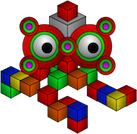

Apache TinkerPop™ is a graph computing framework for both graph databases (OLTP) and graph analytic systems (OLAP). TinkerPop provides a a vendor agnostic graph computing framework and query language distributed under the commercial friendly Apache2 license.
Purpose Built For Graphs
Designed from the ground up to support both transactional and analytical workloads TinkerPop is the most powerful open source graph framework available.
Use Cases
TinkerPop is optimized for common graph use cases such as Social Networks , Knowledge Graphs , Fraud Detection , Recommendation Engines , and many more...
Gremlin Query Language
TinkerPop Gremlin is the most complete open source graph query language designed and optimized for high performance graph traversals.
Open Source
TinkerPop is an open source project that provides a large number of compatible set of tools and drivers and welcomes contributions.
Community
TinkerPop is a community driven project with a vibrant set of contirbutors from around the world.
Providers
TinkerPop is the most widely supported open source graph framework with 27+ providers including those from Amazon, Microsoft, Neo4j, Alibaba, ...
Downloads
Latest Release:
TinkerPop 3.5.0
(Released: 3-May-2021)
Getting Started
1) Start with Tutorials
2) Read the TinkerPop Documentation
3) Learn Gremlin with the free Practical Gremlin book
4) Explore common query patterns in Gremlin Recipes
Contribute
-  Follow us on Twitter
Follow us on Twitter
- Join the Gremlin-Users mailing list.
TinkerPop is an open source project that welcomes contributions
Apache TinkerPop Contributors
TinkerPop is a community driven project that seeks contributors dedicated to the art of graph computing. TinkerPop contributors bring solid theoretical, development, testing, documentation, etc. skills to the group. These individuals contribute to TinkerPop beyond the ever-changing requirements of their day-to-day jobs and maintain responsibility for their contributions through time.
- Marko A. Rodriguez (2009 - Founder): Gremlin language, Gremlin machine, documentation.
- Joshua Shinavier (2009 - Founder): Graph data models, semantics, and interoperability
- Stephen Mallette (2011 - PMC Chair): Gremlin Console/Server/Driver, Language Variants and general core development.
- Jorge Bay (2017 - PMC): GraphBinary serialization, JavaScript and .NET libraries, mailing list support.
- Florian Hockmann (2017 - PMC): .NET libraries, mailing list support.
- Kelvin Lawrence (2017 - Committer): Documentation and mailing list support.
- Divij Vaidya (2019 - Committer): Gremlin server-client interaction.
- Øyvind Sæbø (2021 - Committer): Gremlint query formatter.
- Ketrina Yim (2009 - Committer): Illustrator, creator of Gremlin and his merry band of robots.
- James Thornton (2013 - PMC): Promotions, evangelism.
- Daniel Kuppitz (2014 - PMC): Gremlin language design, benchmarking, testing, documentation, mailing list support.
- Hadrian Zbarcea (2015 - PMC): Project mentor, provider liason.
- Daniel Gruno (2015 - PMC): Project mentor, infrastructure liason.
- Matt Frantz (2015 - Committer): Gremlin language design, ts-tinkerpop.
- Jason Plurad (2015 - PMC): Gremlin Console/Server, mailing list support.
- Dylan Millikin (2015 - PMC): Gremlin Server/Driver, gremlin-php, GremlinBin, mailing list support.
- Ted Wilmes (2015 - PMC): Promotions, mailing list support, benchmarking, sql-gremlin.
- Pieter Martin (2016 - Committer): Gremlin language, Sqlg.
- Jean-Baptiste Musso (2016 - Committer): Gremlin Server testing, Gremlin Driver (Node.js/JavaScript), mailing list support.
- Michael Pollmeier (2016 - Committer): Gremlin language, Gremlin-Scala.
- David Brown (2016 - Committer): Python libraries, Gremlin Server testing.
- Robert Dale (2016 - PMC): Gremlin Console/Server, documentation, mailing list support.
- Harsh Thakkar (2018 - Committer): Gremlin-SPARQL module.